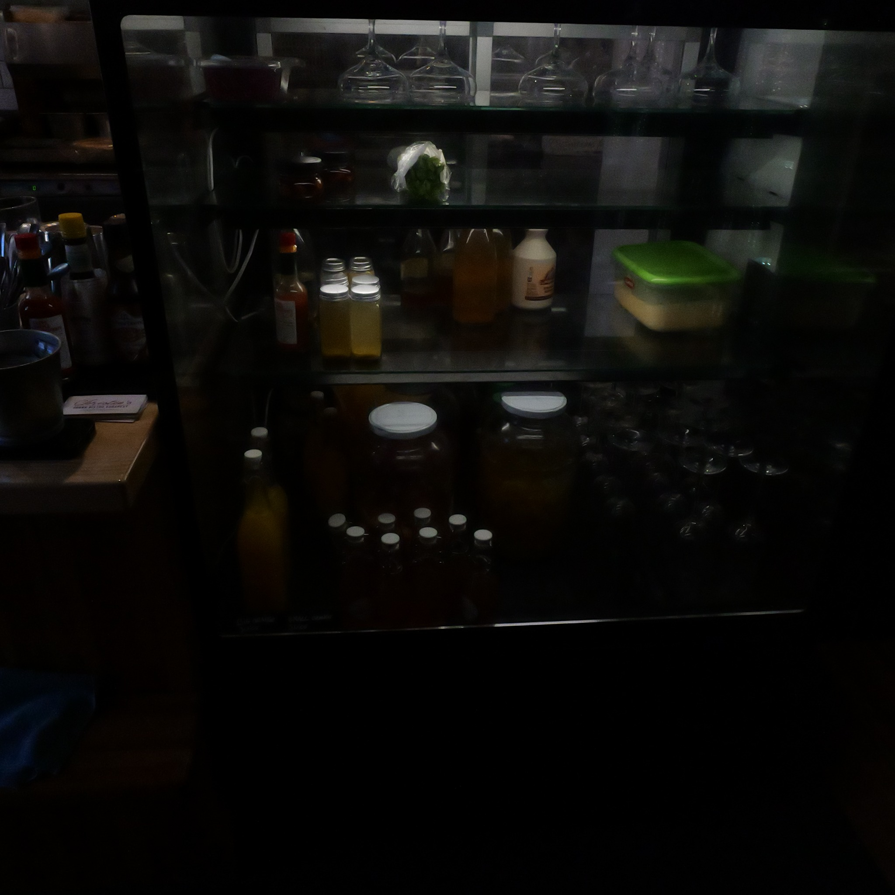
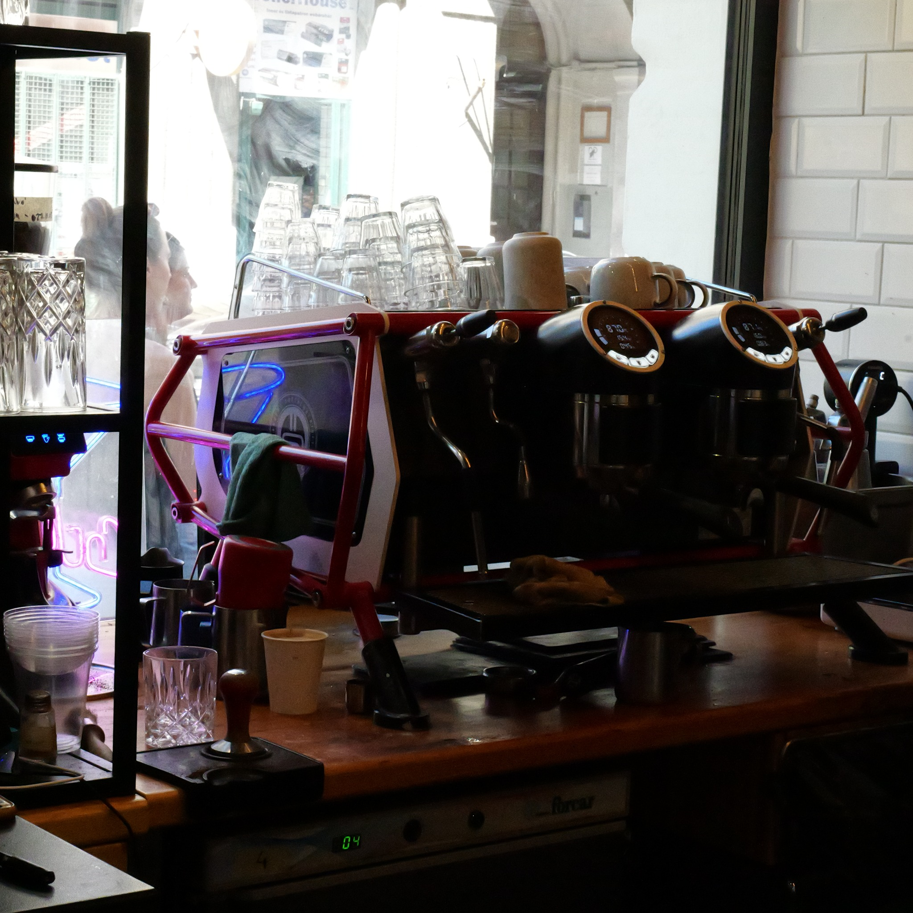

Ingredients first
Good cooking begins with ingredients worth respecting, kept fresh and treated simply.
Christies Urban Bistro grew from a simple idea: make a city restaurant feel personal. A place where the food is confident but never fussy, the room feels considered but never formal, and every visit has its own rhythm.
Our menu moves through brunch, comfort food, coffee and cocktails, shaped by global influences and the everyday energy of Budapest.

Luxury for us is not excess. It is care, consistency and the feeling that every detail belongs.
Good cooking begins with ingredients worth respecting, kept fresh and treated simply.
Every plate and drink should feel intentional, generous and unmistakably ours.
Hospitality means creating a room where guests and team members both feel welcome.

We care about the details — the texture of the coffee, the balance of a sauce, the timing of service, the warmth of the room — but the experience should always feel effortless.
That is the Christie’s idea: thoughtful food, expressive drinks and a little more time together.
Reserve a table